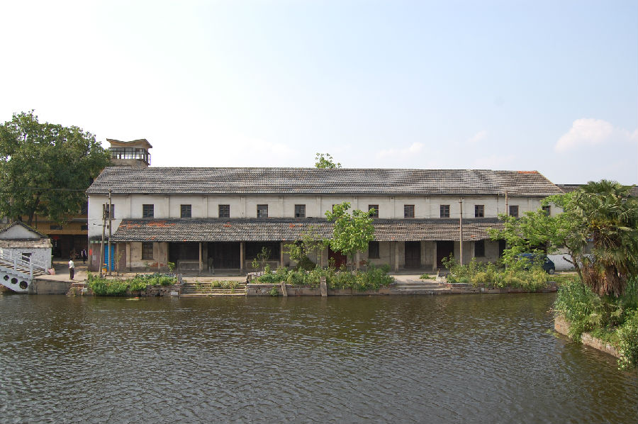

嘉兴市文物保护网 · 市级文物保护点 · 2020-11-06 · 原文

栖真镇茧站位于嘉兴市秀洲区油车港镇栖真村3组。据茧站工作人员介绍，建于二十世纪六十年代。砖混结构二层，坐北朝南，南门口为池湾港，东南侧为麟湖桥，沿河港建有廊篷，通面阔45.25米，廊棚进深4米，通进深10.7米，层高10米，一层13开间，南边门楣位置有红色大字“栖真茧站”。丝织业作为嘉兴的一项传统特色产业具有悠久的历史，从传统手工作坊向现代工业化发展过程中，经历了一系列的生产工具和生产方式的变革，栖真镇老茧站正是这段发展史中的难得实物见证，因而具有较高的历史和科学价值。2009年公布为嘉兴市文物保护点。